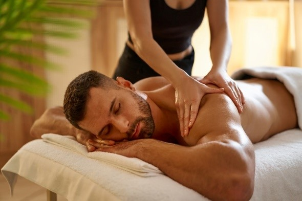

Massagem com Bambu
estimula as glândulas proporcionando um efeito relaxante e auxilia na diminuição da celulite - Indicações: eliminar toxinas, reduzir celulite, gordura localizada, flacidez e medidas.

Massagem relaxante
Relaxamento dos músculos e, por consequência, diminuição de dores musculares, diminuição da ansiedade e estresse, alívio de enxaquecas e dores de cabeça, melhora da circulação sanguínea e do sistema imunológico.
